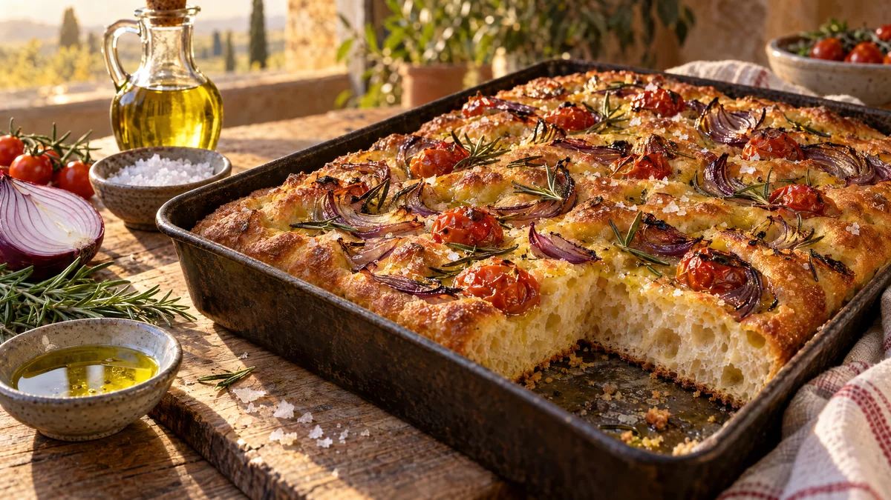

RESTFEST · RECEPTBröd · Fika & bakning · Tillbehör
Fokaccia med rödlök, rosmarin och flingsalt
Mjöl, vatten, jäst och en generös skvätt olivolja. Degen jäser över natten i kylen och gräddas till ett gyllene, luftigt bröd med krispig botten och djupa gropar där olivoljan samlas. Ovanpå ligger rödlök, körsbärstomater, rosmarin och flingsalt. Ser ut att komma från ett italienskt bageri, men kräver ingen knådning alls.
- Förberedelse
- 15 min + 12 tim i kylen + 2 tim jäsning
- Tillagning
- 25 min
- Portioner
- 1 långpanna (ca 12 bitar)
- Nivå
- Nybörjare
 Det här behöver du
Det här behöver du
Tryck på + vid det du behöver köpa.
Deg
I formen och ovanpå
Gör så här
- Smula ner jästen i en stor bunke och rör ut den i vattnet. Använder du torrjäst, blanda den med mjölet i stället. Tillsätt salt, olivolja och mjöl och rör ihop till en kladdig deg med en slev. Den ska inte knådas.
- Täck bunken och låt den stå i rumstemperatur i 30 minuter.
- Sträck och vik degen: fukta handen, lyft ena kanten av degen, sträck den uppåt och vik den över mitten. Vrid bunken ett kvarts varv och upprepa, fyra vik totalt. Gör det tre gånger, med 15 minuters vila emellan. Degen blir slätare och smidigare för varje omgång.
- Täck bunken och ställ den i kylen i 12–24 timmar. Den långa, kalla jäsningen ger smak och stora bubblor.
- Häll 4 msk olivolja i en långpanna, ca 25 × 35 cm, och sprid ut den. Vänd ner degen i formen och vänd den en gång så att den blir oljig på båda sidor. Tryck försiktigt ut den mot hörnen. Drar den ihop sig, vänta 15 minuter och försök igen.
- Låt degen jäsa övertäckt i rumstemperatur i 2–3 timmar, tills den är pösig och full av bubblor.
- Sätt ugnen på 230 grader. Skala rödlöken och skär den i tunna klyftor. Dela tomaterna och plocka rosmarinbladen.
- Ringla 2 msk olivolja över degen. Smörj fingrarna med olja och tryck djupa gropar i hela degen, ända ner till botten. Lägg på rödlök, tomater och rosmarin, tryck ner dem lätt och strö över flingsaltet.
- Grädda i nedre delen av ugnen i 20–25 minuter, tills fokaccian är djupt gyllene. Ringla över resten av oljan direkt när den kommer ut och låt den svalna på galler i 10 minuter.
Dekoration och servering
- Lägg fokaccian hel på ett skärbräde, så att alla ser groparna och toppingen.
- Skär eller riv den i stora rutor precis före servering.
- Servera den ljummen till soppa, sallad eller romescon i recept 25.
- Fokaccian är godast samma dag. Dagen efter blir den perfekt till panzanellan i recept 41.
- Variera toppingen efter vad som finns hemma: oliver, tunt skivad potatis, paprika eller timjan.
Mått och ugnstemperaturer
Måtten är svenska (dl, msk, tsk, krm). Ugnstemperaturerna gäller vanlig ugn med över- och undervärme; med varmluft, sänk med 20 grader.